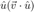
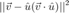
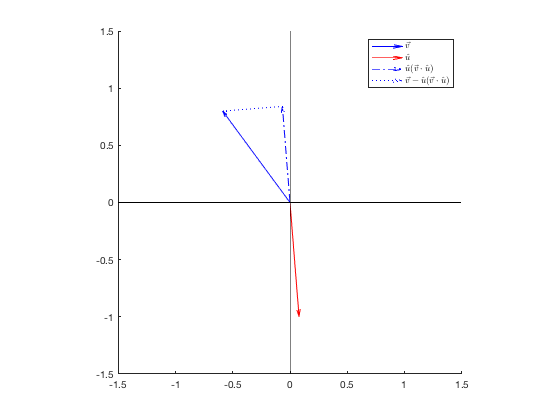
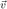
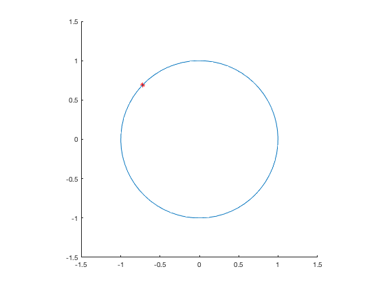
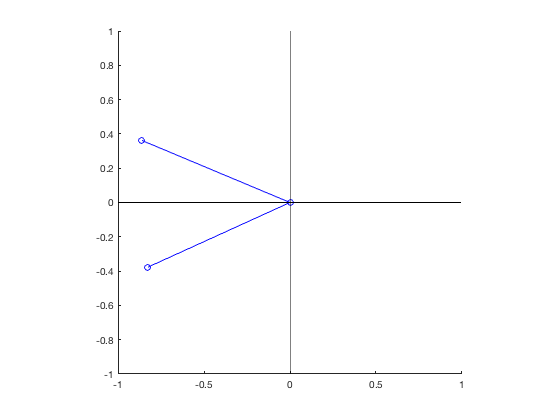
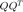

Contents
clear all; close all
1 Testing for (non)linearity
System 1 is possibly linear. L = [1 4] and is unique
System 2 is possibly linear. L = [-3 1; 0 0] is not unique because there are two elements in output but there is only one independet input vector
System 3 is possibly linear. L = [-1 1/3] and is unique
System 4 is not linear because all linear system return zero or zero vector in response to zero input.
System 5 is not linear because it doesn't follow the rule of superposition
[1 -1] + 2*[1 1]
ans =
3 1
[3 2] + 2*[1 2]
ans =
5 6
is not equal to [5 3]
2 Inner product with a unit vector
- a)

funcA = @(u,v) u*dot(v,u);
- b)

funcB = @(u,v) v - funcA(u,v);
- c)

funcC = @(u,v) sqrt(sum(func(u,v).^2));
- 2.1 2-dimensional test
v = rand(2,1)*2-1 a = rand()*2*pi; u = [cos(a);sin(a)] figure; hold on quiver(0,0,v(1),v(2),1,'b-','DisplayName','$\vec{v}$') quiver(0,0,u(1),u(2),1,'r-','DisplayName','$\hat{u}$') p=funcA(u,v) quiver(0,0,p(1),p(2),1,'b-.','DisplayName','$\hat{u} (\vec{v} \cdot \hat{u})$') q=funcB(u,v) quiver(p(1),p(2),q(1),q(2),1,'b:','DisplayName','$\vec{v} - \hat{u} (\vec{v} \cdot \hat{u})$') leg=legend(); set(leg,'Interpreter','latex') plot([-2,2],[0,0],'k','HandleVisibility','off') plot([0,0],[-2,2],'k','HandleVisibility','off') hold off axis equal xlim([-1.5,1.5]) ylim([-1.5,1.5])
v =
0.4800
-0.1503
u =
-0.7145
0.6996
p =
0.3202
-0.3135
q =
0.1598
0.1632
 The codes are working.
- 2.2 4-dimensional test
v = rand(4,1)*2-1 u0 = rand(4,1)*2-1; u = u0/norm(u0)
v =
0.3304
-0.9241
0.1762
-0.4878
u =
-0.5114
-0.0629
-0.8542
0.0690
the vector in a)
p = funcA(u,v)
p =
0.1509
0.0186
0.2520
-0.0203
is in the same direction as  .
.
p./u
ans = -0.2950 -0.2950 -0.2950 -0.2950
the vector in b)
q = funcB(u,v)
q =
0.1795
-0.9426
-0.0758
-0.4675
is orthogonal to  .
.
dot(p,q)
ans = 1.7347e-18
almost zero.
the sum of the two vector
p+q
ans =
0.3304
-0.9241
0.1762
-0.4878
is equal to .
the sum of squared length of the two vectors
sum(p.^2) + sum(q.^2)
ans =
1.2321
is equal to $ {\vec{v}} ^2 $.
sum(v.^2)
ans =
1.2321
3 Geometry of linear transformation
singular value decomposition of a random matrix M
M = rand(2,2) [U,S,V] = svd(M)
M =
0.7965 0.0790
0.1908 0.6145
U =
-0.8637 -0.5040
-0.5040 0.8637
S =
0.8705 0
0 0.5450
V =
-0.9008 -0.4342
-0.4342 0.9008
a unit circle to be operated by the matrix
theta = (0:64)/64*2*pi; P = [cos(theta);sin(theta)]; figure;hold on plot(P(1,1),P(2,1),'r','Marker','*') plot(P(1,:),P(2,:)) hold off;axis equal xlim([-1.5,1.5]) ylim([-1.5,1.5])

First transformation
R1 = V'*eye(2) [lu,lv,a] = vecLenAngle(R1(:,1),R1(:,2)); disp(['resulting length ',num2str(lu),', ',num2str(lv), '. Angle ',num2str(a*180/pi),' degree'])
R1 = -0.9008 -0.4342 -0.4342 0.9008 resulting length 1, 1. Angle 90 degree
angle changed but lengths are preserved.
plotVec2(R1);

P = V'*P; figure;hold on plot(P(1,1),P(2,1),'r','Marker','*') plot(P(1,:),P(2,:)) hold off;axis equal xlim([-1.5,1.5]) ylim([-1.5,1.5])
the circle rotated (potentially flipped axis addtionally) because V is an orthogonal matrix.
Second transformation
R2 = S*R1 [lu,lv,a] = vecLenAngle(R2(:,1),R2(:,2)); disp(['resulting length ',num2str(lu),', ',num2str(lv), '. Angle ',num2str(a*180/pi),' degree'])
R2 = -0.7841 -0.3780 -0.2366 0.4909 resulting length 0.81907, 0.61958. Angle 69.2014 degree
lengths changed, angle unchanged.
plotVec2(R2);
P = S*P; figure;hold on plot(P(1,1),P(2,1),'r','Marker','*') plot(P(1,:),P(2,:)) hold off;axis equal xlim([-1.5,1.5]) ylim([-1.5,1.5])

The circle was stretched into an oval because S is a diagonal matrix.
Third transformation
R3 = U*R2 [lu,lv,a] = vecLenAngle(R3(:,1),R3(:,2)); disp(['resulting length ',num2str(lu),', ',num2str(lv), '. Angle ',num2str(a*180/pi),' degree'])
R3 =
0.7965 0.0790
0.1908 0.6145
resulting length 0.81907, 0.61958. Angle 69.2014 degree
angle changed, lengths unchanged
plotVec2(R3);

P = U*P; figure;hold on plot(P(1,1),P(2,1),'r','Marker','*') plot(P(1,:),P(2,:)) hold off;axis equal xlim([-1.5,1.5]) ylim([-1.5,1.5])

the oval rotated (potentially flipped axis addtionally) because U is an orthogonal matrix.
4 A simple visual neuron
- a) the system is not linear because it only takes positive input, but with positive inputs the response is essentially the dot product a vector of 7 intensities values of each location with the weight vector
w = [1,3,4,5,4,3,1]
w =
1 3 4 5 4 3 1
- b) the unit vector that can generate largest response is parallel with the weight vector
u = w/norm(w)
u =
0.1140 0.3419 0.4558 0.5698 0.4558 0.3419 0.1140
because the response dot(u,w), which is equal to |w|cos(a), where a is the angle between u and w, takes largest value only when cos(a) is 1 which means u and w are on the same direction.
- c) [1,0,0,0,0,0,0] or [0,0,0,0,0,0,1].
Gram-Schmidt
- 3d plot
Q = gramSchmidt(3) figure; hold on quiver3(0,0,0,Q(1,1),Q(2,1),Q(3,1)) quiver3(0,0,0,Q(1,2),Q(2,2),Q(3,2)) quiver3(0,0,0,Q(1,3),Q(2,3),Q(3,3)) axis equal xlim([-1.1 1.1]);ylim([-1.1 1.1]);zlim([-1.1 1.1]); grid on view(3) rotate3d on
Q =
-0.3176 -0.9466 -0.0558
-0.4609 0.1027 0.8815
0.8287 -0.3057 0.4689

- 10d test
Q = gramSchmidt(10) Q * Q'
Q =
Columns 1 through 7
0.0189 0.1600 0.2624 0.3857 -0.0502 0.2071 -0.2520
-0.4279 -0.0091 -0.3412 -0.2980 0.2086 0.4146 0.2387
-0.3259 0.2242 0.2633 -0.2003 -0.5108 -0.2518 -0.1735
-0.4484 0.3745 0.2331 0.0669 0.4657 0.3013 -0.2876
0.0670 -0.5860 0.4329 -0.2806 -0.0379 0.4270 0.1654
0.4773 0.2710 -0.3944 0.1789 0.0443 0.2968 0.0720
-0.1828 0.2662 -0.3264 -0.2905 -0.4877 0.1860 0.1288
-0.1910 -0.4135 -0.3048 0.3823 -0.3575 0.3206 -0.4936
0.2465 0.3458 0.3838 0.0673 -0.3147 0.4621 0.2215
-0.3826 -0.0743 0.0363 0.6099 -0.0891 -0.0981 0.6518
Columns 8 through 10
0.5156 -0.2647 -0.5582
-0.1101 -0.5341 -0.2045
-0.4912 -0.0285 -0.3708
-0.1081 0.4190 0.1492
-0.0307 0.3305 -0.2541
-0.4095 0.2858 -0.4082
0.4993 0.4060 0.0394
-0.1679 -0.0215 0.2249
-0.1364 -0.2948 0.4479
-0.0652 0.1588 -0.0539
ans =
Columns 1 through 7
1.0000 -0.0000 -0.0000 0.0000 0.0000 0.0000 0.0000
-0.0000 1.0000 -0.0000 0.0000 0.0000 -0.0000 -0.0000
-0.0000 -0.0000 1.0000 0.0000 0.0000 0.0000 0.0000
0.0000 0.0000 0.0000 1.0000 -0.0000 0.0000 -0.0000
0.0000 0.0000 0.0000 -0.0000 1.0000 0.0000 -0.0000
0.0000 -0.0000 0.0000 0.0000 0.0000 1.0000 0.0000
0.0000 -0.0000 0.0000 -0.0000 -0.0000 0.0000 1.0000
0.0000 0.0000 0.0000 0.0000 0.0000 0.0000 0.0000
-0.0000 0.0000 -0.0000 0.0000 0.0000 -0.0000 -0.0000
-0.0000 -0.0000 -0.0000 -0.0000 -0.0000 0.0000 -0.0000
Columns 8 through 10
0.0000 -0.0000 -0.0000
0.0000 0.0000 -0.0000
0.0000 -0.0000 -0.0000
0.0000 0.0000 -0.0000
0.0000 0.0000 -0.0000
0.0000 -0.0000 0.0000
0.0000 -0.0000 -0.0000
1.0000 -0.0000 0.0000
-0.0000 1.0000 -0.0000
0.0000 -0.0000 1.0000
 is almost idendity matrix. Q has orthonormal columes.
Null and Range spaces
load mtxExamples.mat
- MTX1